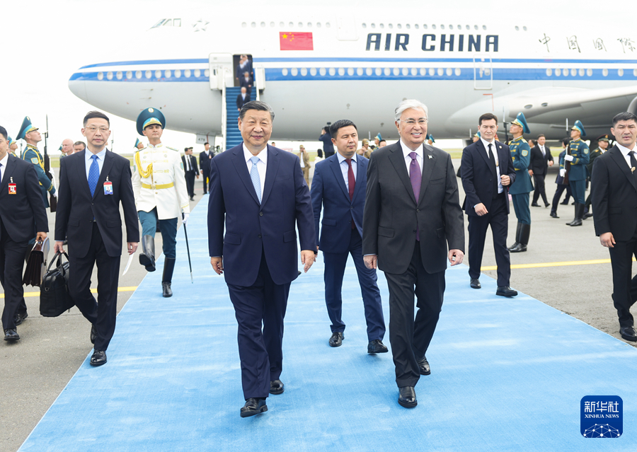
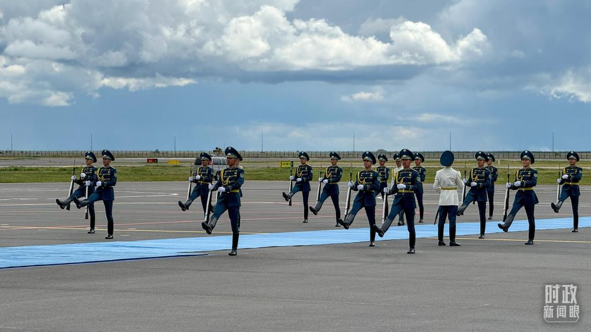
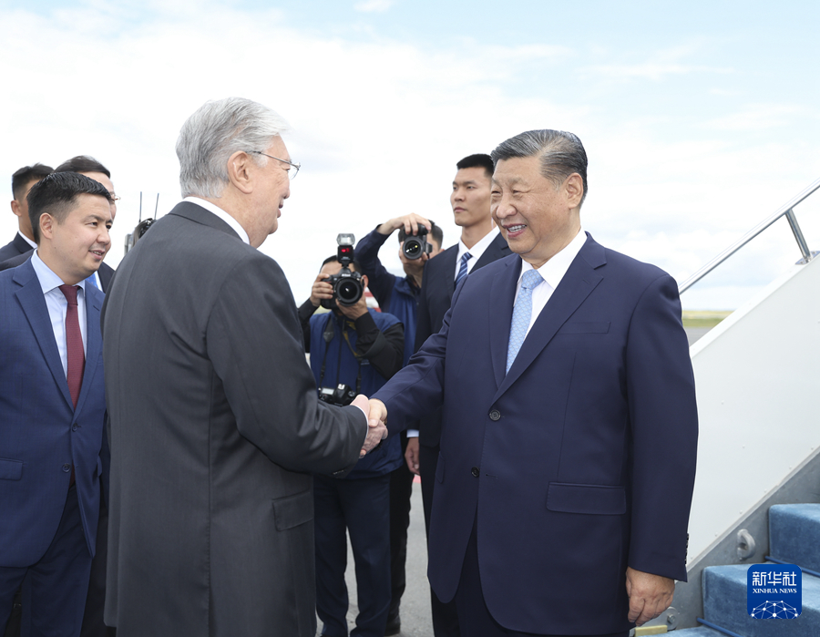

当习近平主席乘坐的专机进入哈萨克斯坦领空时，哈萨克斯坦三架空军战机升空护航。 专机抵达阿斯塔纳纳扎尔巴耶夫国际机场时，托卡耶夫总统率政府第一副总理等高级官员热情迎接。

当地时间7月2日中午，国家主席习近平乘专机抵达阿斯塔纳，出席上海合作组织成员国元首理事会第二十四次会议，应哈萨克斯坦共和国总统托卡耶夫邀请，对哈萨克斯坦进行国事访问。习近平主席专机抵达阿斯塔纳纳扎尔巴耶夫国际机场时，哈萨克斯坦总统托卡耶夫率政府高级官员热情迎接。

会议强调，要切实抓好《规定》的贯彻落实，坚持严字当头，敢于较真碰硬，敢管敢严、真管真严，释放失责必问、问责必严的强烈信号，推动金融监管真正做到“长牙带刺”、有棱有角，将严的基调、严的措施、严的氛围在金融领域树立起来并长期坚持下去。

巴以冲突同样牵动人心。解决巴以问题的根本出路在于建立独立的巴勒斯坦国。历史反复证明，巴以局势之所以屡陷动荡，根本原因在于联合国决议没有得到切实执行，“两国方案”基础不断被侵蚀，中东和平进程偏离正轨。中法两国在巴以问题上有很多共识，应该加强合作，为恢复中东和平作出贡献。